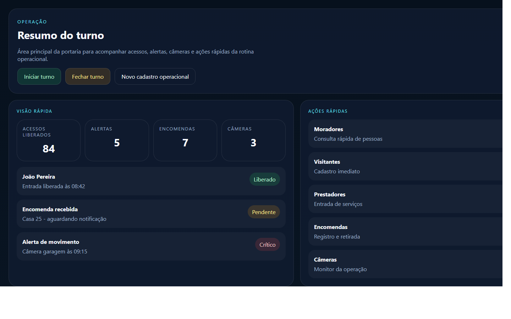
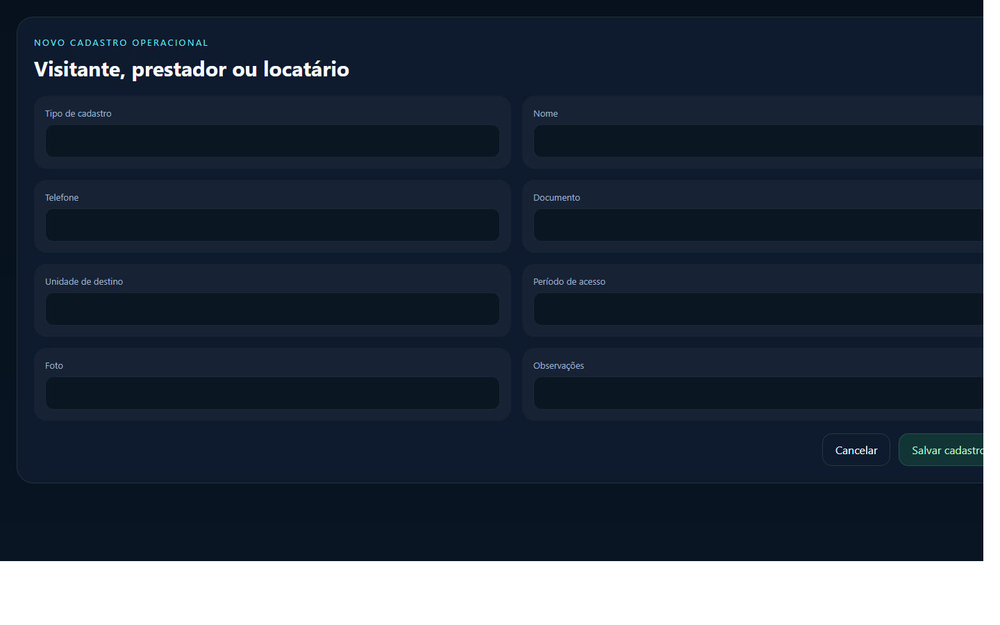

Manual do Usuário Operador
Portaria Web
Versão: 1.0
Data: 23/04/2026
Este manual foi preparado para orientar o uso do perfil Operador, com foco na rotina da portaria e no atendimento rápido do dia a dia.
1. Visão geral
O perfil Operador é usado na portaria para acompanhar a rotina operacional em tempo real.
Com esse perfil, você consegue:
- iniciar e fechar turno
- consultar moradores, visitantes, prestadores e locatários
- fazer cadastro rápido
- registrar encomendas
- acompanhar alertas
- consultar câmeras
- consultar histórico de acessos
- usar busca por foto
Imagem 1
Adicionar captura da tela operacional aqui.
Arquivo sugerido:
docs/manual-usuario/imagens/operador-01-operacao.png

2. Como entrar no sistema
1. Abra o navegador.
2. Acesse o endereço do sistema.
3. Informe seu e-mail.
4. Informe sua senha.
5. Clique em Entrar.
Se o acesso estiver correto, o sistema abrirá a área operacional.
Imagem 2
Adicionar captura da tela de login aqui.
Arquivo sugerido:
docs/manual-usuario/imagens/operador-02-login.png

3. O que cada área faz
Resumo do turno
Mostra a situação atual do turno, com acesso rápido às ações mais usadas.
Cadastro rápido
Permite criar cadastro operacional de:
- visitante
- prestador
- locatário
Alertas
Mostra os eventos recentes da operação para análise rápida.
Câmeras
Permite consultar as câmeras liberadas e abrir o monitor.
Encomendas
Permite registrar, consultar e acompanhar as encomendas da portaria.
Histórico de acessos
Permite consultar os registros recentes de entrada e saída.
Busca por foto
Permite pesquisar uma pessoa por imagem ou usar a câmera selecionada, quando o recurso estiver disponível.
4. Passo a passo das tarefas principais
4.1. Iniciar o turno
1. Entre no sistema.
2. Aguarde o carregamento da área operacional.
3. Clique em Iniciar turno, quando necessário.
4. Confirme para começar a rotina operacional.
4.2. Fechar o turno
1. Clique em Fechar turno.
2. Preencha as observações da passagem de turno.
3. Escolha se o turno será apenas pausado ou finalizado.
4. Confirme a ação.
4.3. Fazer cadastro rápido
1. Abra Novo cadastro operacional.
2. Escolha o tipo de cadastro.
3. Informe nome, unidade e dados principais.
4. Adicione foto, quando necessário.
5. Clique em Salvar.
Imagem 3
Adicionar captura do cadastro rápido aqui.
Arquivo sugerido:
docs/manual-usuario/imagens/operador-03-cadastro-rapido.png

4.4. Registrar uma encomenda
1. Abra a área Encomendas.
2. Clique em Registrar encomenda.
3. Escolha unidade ou destinatário.
4. Preencha os dados principais.
5. Salve o registro.
4.5. Consultar alertas
1. Abra a área Alertas.
2. Veja os eventos mais recentes.
3. Abra o alerta desejado para analisar os detalhes.
4. Faça o encaminhamento conforme a rotina do condomínio.
4.6. Consultar câmeras
1. Abra a área Câmeras.
2. Escolha a câmera desejada.
3. Veja o monitor da operação.
4.7. Usar busca por foto
1. Abra o bloco Busca por foto.
2. Envie uma imagem ou selecione a câmera disponível.
3. Aguarde o resultado da pesquisa.
4. Consulte a pessoa identificada ou os registros relacionados.
5. Boas práticas
- mantenha o turno corretamente iniciado
- confira a unidade antes de salvar um cadastro
- registre observações claras na troca de turno
- acompanhe alertas críticos primeiro
- use a busca antes de cadastrar para evitar duplicidade
6. Dúvidas comuns
O operador pode cadastrar visitante, prestador e locatário?
Sim. O cadastro rápido foi preparado para esse uso operacional.
O turno precisa ser encerrado ao sair da página?
O ideal é sempre registrar corretamente se o turno está sendo finalizado ou apenas pausado.
O operador resolve o alerta no sistema?
O operador acompanha, registra a ação necessária e segue a rotina definida pelo condomínio.
7. Anexos
- Imagem 1: tela operacional
- Imagem 2: login
- Imagem 3: cadastro rápido